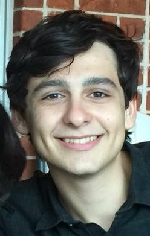

about me:
name:
Marco Ravelo
bio:
I am currently an undergraduate student at Texas A&M studying Computer Science with minors in Mathematics and Art. I enjoy programming, creating games, designing art, and playing music among other things. Some of my interests within the CS field include application/game development, computer graphics, computer-human interaction, and artificial intelligence.